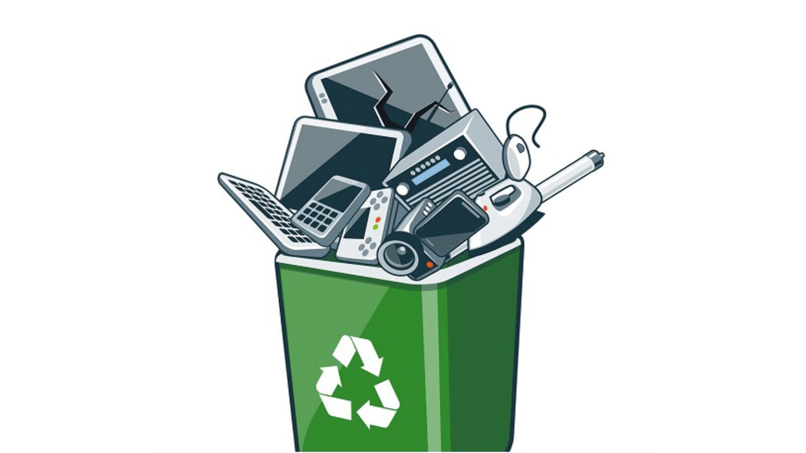

DEFINICIÓN
En un mundo donde la tecnología avanza rapidamente, la basura electrónica se ha convertido en un problema ambiental creciente.
Cada año, millones de teclados, computadoras y otros dispositivos electrónicos son desechados, generando toneladas de residuos que tardan siglos en degradarse.
Sin embargo, de esta problemática también surge una oportunidad como transformar estos desechos en productos innovadores y sostenibles.
Nuestra colección de productos hechos con teclas y ratones reciclados busca darle una nueva vida a materiales electrónicos en desuso, combinando creatividad, funcionalidad y conciencia ecológica.

En la página (Catalogo de Productos/TIPOS Y TUTORIALES) podras visualizar las creaciones que más destacan en el mundo del reciclaje:
INDICACIONES
Resuelve los dos juegos interactivos que aparecen en el menú al darle clic a la siguiente página, para reforzar la información de forma divertida..